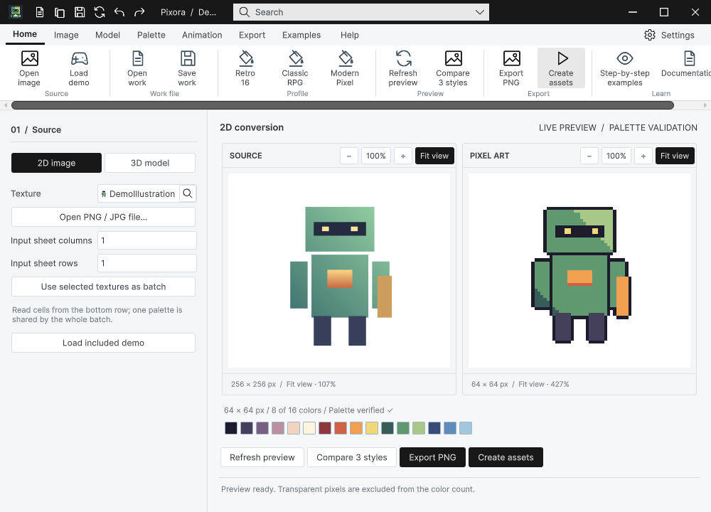
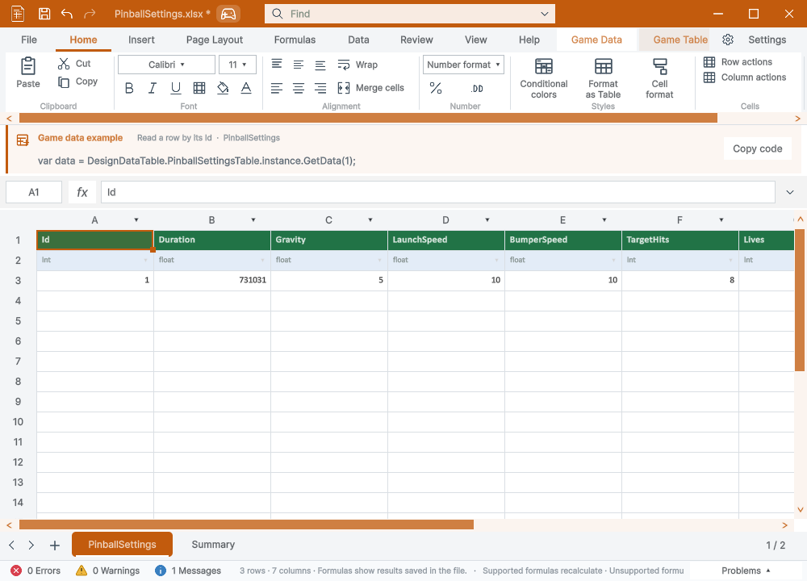

Tracefolio REPORTS & ISSUES
Tracefolio REPORTS & ISSUES공통 창 관리 최적화와 강한 스트레스 테스트
완료실제24개 창 조회 구간94.7% 감소. 미저장 제목 버그를 수정하고 논리 스트레스·실제4000회 부하·마우스60회를 검증했습니다.
작업 결과
Templete1.2.6 공통 창 관리 리팩토링·미저장 제목 판별 수정·9238f018 푸시 완료. 실제24개 창 상태 보존과 최종 실제 클릭 검증 통과.
변경 내용
적용 내용
창 등록 시 같은 ID의 재검색을 생략하고 구성원 변경 때만 읽기 전용 목록 스냅샷을 갱신합니다. 발견 자체는 계속 수행해 닫힌 창·이름 변경을 시간 캐시 뒤에 숨기지 않습니다. 포커스 갱신은 창마다 상태를 한 번 읽고 같은 Z 값의 순서를 보존합니다.
선택적 IWindowFocusReadHost를 추가했습니다. DataTable 호스트는 한 관찰 안에서 Win32 후보·위치·제목을 한 번 읽어 두 제품이 공유합니다. 관찰이 끝나면 해제하며 프레임을 넘어 유지하지 않습니다. 기존 호스트 API는 유지하고 지원하지 않는 호스트는 기존 경로로 동작합니다. 빈 목록은 네이티브 관찰을 시작하지 않습니다.
실제 부하에서 MiniGameBalance.xlsx*를 찾지 못한 버그도 확인했습니다. Unity의 미저장 별표를 공통 제목 판별에서 조건부로 허용하고 애매한 후보를 임의 선택하지 않는 기존 원칙을 유지했습니다. 커밋9238f018. API1, 양 제품 최소 모체1.2.6.
교훈 검토: Unity6.0.83f1의0 반환 계측기·제목 별표·창 겹침 조건과 QA 어셈블리 분리를 프로젝트 README·시험 코드·아카이브에 기록했습니다. 전역은 기존 증거 검증 원칙과 중복돼 변경 없음입니다.
검증
| 측정 범위 | 변경 전 | 변경 후 |
|---|---|---|
| 128개 논리 창: 포커스 갱신500회 | 1440.93ms /조회128500회 | 33.79ms /조회64000회 |
| 실제24개 창: 상태 조회200회 | 관찰 공유 없음2.926초 | 공유 적용3회 중앙값0.1557초 |
| 실제24개 창: 선택3000회+최소화·복원1000회 | 297.59초 | 148.14초 |
위 수치는 특정 조회/시험 구간입니다. 전체 렌더링 속도나 FPS가94.7% 개선됐다는 의미가 아닙니다. 네이티브 A/B의 공유 없음은1개 유효 표본, 공유 적용은3개 표본이며 다른 PC 부하의 영향은 배제하지 못했습니다.
최대128개 논리 창에서 무작위 등록·ID·최소화5만 회, 포커스·순서1만 회, 순서 계획10만 회, 생성·파괴12800회가 포함된11259개 검증을 통과했습니다. 별도로 생성·파괴12800회 후 잔존 Unity 시험 창0개를 확인했습니다. 기존 회귀에 제목 판별8개를 더한206개 통과. 실제 핸들2400개 대조와 중첩·역순·중복·예외 해제, 빈 목록 및1000회 관찰 해제도 통과했습니다.
최종24개 실제 창에서 엔진 선택3000회·최소화/복원1000회 후 창 ID24개와 Pixora 디자인 값·DataTable 미저장 세션이 동일했습니다. 마지막 빈 목록 조기 반환은 그 이후 추가한0개 창 경로로, 별도 ScopeContract와 실제60클릭으로 재검증했습니다.
실제 마우스 목록 클릭60회 통과. 버튼 놓기 후 상태 확인 중앙값17ms/P95 41ms/최대170ms(누르기80ms 별도). 캡처248개에서 어느 한 도구의 덮임0개, 문서 SHOW/HIDE0개. 최대 표본 간격265ms이므로 모든 중간 영상 프레임을 보증하지 않습니다.


두 이미지는 실제 Unity PrintWindow 캡처이며 무손실 WebP입니다.1000×720, Pixora PNG93448→WebP51254바이트, DataTable79509→40986바이트. 런타임 대상 소스는 QA 복사본과 일치했습니다. 소스 대조 · 최종 부하 · 수치 요약.
첫 실제 부하는 최소화15번째에 실패해 보존했고, 계측으로 별표 제목 불일치와 동일 위치 다중 후보를 확인·수정한 뒤 반복했습니다. 45ms 고정 판정은15번째 클릭의 최종 상태 확인에 실패했습니다. 이후 실제 상태를 최대500ms 관찰하는 검사에서60회가 통과했고 지연을 기록했습니다. 최초 실패가 관측 지연·전면 변경·일시적인 순서 변경 중 무엇인지는 당시 기록만으로 확정하지 못했습니다. 오래된 응답을 읽은 A/B 시도와 PowerShell UTC 이중 변환 문제는 무효로 제외했습니다. 교차 제품 QA 코드를 DataTable 제품 어셈블리에 넣은 최초 컴파일 실패도 개발 전용 QA 어셈블리로 옮겨 해결했습니다.
남은 사항
완전한 무할당·누수 없음으로 보고하지 않습니다. Unity의 GC.GetAllocatedBytesForCurrentThread는1MiB 시험 할당에도0, Process.PrivateMemorySize64도0을 반환해 해당 값은 사용할 수 없습니다. 별도 PowerShell 메모리 표본의 관측 최대는 약1.91GiB이며 특정 표본 구간의 값입니다. 생성·파괴 후 Mono 사용량은 기존약7.06→10.83MB, 개선약7.07→10.81MB로 비슷하게 증가했습니다. 이것만으로 장기 누수 여부는 확정할 수 없습니다.
검증은 Windows/Unity6000.0.83f1의 분리 QA 프로젝트에서 수행했습니다. 다른OS·DPI·수시간 이상 부하·전체 Pixora 변환/내보내기 성능·모든 제품 버전 조합은 이번 범위 밖입니다. 판매용 unitypackage를 새로 만들지 않았고 동시에 진행 중이던 다른 변경은 커밋하지 않았습니다.
작업 시간
- 제안 시간: 30~50분. 추가 실패 조사·재QA·게시 지연은 진행 중 별도 보고했습니다.
- 실제로 완료된 시간: 시작2026-10-31 14:22:38 KST. 구현·실행 검증·코드 푸시 후 보고서 생성까지72.6분 · 2026-10-31 15:35:15 KST. 게시 확인은 생성 후 별도 수행합니다.
- XERJ: 사용 — XERJ PreserveVisiblePeers 검색 후 현재 WindowServices/WindowFocus/네이티브 호스트와 실행 결과를 대조했습니다.